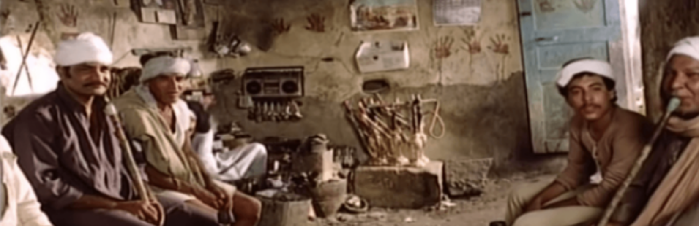

Atef al-Tayeb's Al-Zammar (The Piper, 1985)
True to his own personal history as a native of Sohag, Atef al-Tayeb's fifth feature film, Al-Zammar (The Piper, 1985), gives us everything we expect of a film set in the remote villages of Egypt's south: dramatic costumes, lofty dialogue and sun-baked landscapes with flaring sands and foggy dust. But the film doesn't stop at the traditional story of the fascinating and exotic — it mixes Tayeb's signature social and political critique of the moral vacuum and dystopia of 1980s with a dramatic symbolism to create a story of failed idealism and the many ways in which evil triumphs.
Hosni Mubarak assumed office in 1981, and continued Sadat's "open-door" economic policies, dismantling the state's public sector and ushering in mass privatization. This aggressive social engineering project aimed at creating a new Egyptian — consumerist and opportunistic — had already been explored in multiple films (many films made in the aftermath of the 1967 defeat tackled the "New Egyptian" and encountered censorship problems), but it reached its logical conclusion in Tayeb's neorealist take, told with his sharp, albeit melodramatic, sensitivity.
Scripted by Rafik al-Sabban, who is said to have been partly inspired by the 1957 play Orpheus Descending by the American south's Tennessee Williams, the film uses the lyrical poetry of celebrated poet and lyricist Abdel Rahim Mansour, who died a year before the film was released and hailed from Egypt's south — Qena, to be specific.
I traverse valleys and fields
O lost train of my days
Time has stopped inside me
I call
only to be answered by the echo of my call
The land is my home and my field
And its sky is my shield
To whom do I relay my sorrow?
Tell me my star
The keeper of my solitude
My company during the night
In an unusual experiment, The Piper is punctuated by scenes in which protagonist Hasan (Nour al-Sherif) recites Mansour's poetry to Egypt's enchanted farm workers as he wonders among fertile landscapes. Only two decades after the last flood of 1964, after the Aswan High Dam was completed, Egypt's farmed lands still retained some of their famed abundance. There is something almost Maoist about a poet sitting in a traditional coffee-house in an obscure village in Upper Egypt, reciting poetry and talking about labor unions. But it is impossible not to be seduced by Hasan's words and ideas. He is a pastoral demigod, playing his nay in the wilderness and bewitching farm workers and itinerant laborers to revolt against their masters: leftist poetics at the height of its idealism.
We come to understand that Hasan was (of course) a university student, who, hounded by state security for his political views and activism, had to go into hiding and assume anonymity in Egypt's deep south. Roaming from one village to another, reciting poetry, playing his nay and instigating the workers, Hasan ends up in a village controlled by three men who are using funds for a local reservoir project to enrich themselves at the residents' expense.
His efforts to spread awareness among the villagers is contrasted with the continued efforts of the corrupt trio and their government accomplices. In one scene, the district's parliamentary representative gives an absurd speech about the importance of the reservoir project, that makes little or no sense, while having already struck a deal to siphon part of its funding into his own pockets. This is a clear criticism of Sadat's, and subsequently Mubarak's, claim to liberalize Egyptian politics by reintroducing parliamentary politics (partially suspended under Gamal Abdel Nasser's rule), and it creates a caricature of political rhetoric that functions not only as comic relief but to show the poignant authenticity of Hasan words in glaring contrast.
As he struggles to gather the laborers and get them to revolt, he comes across Mariam and Gaber, a childless couple who own the village grocery shop. Mariam (played by long-time communist and sorrowfully pensive Mohsena Tawfik) is constantly taunted by her husband and her unmarried sister-in-law (the exquisitely vile Naima al-Saghier) for being the daughter of dancing gypsies, and the revelation of their own dark secret sets the scene for Hasan and Mariam's ill-fated alliance.
Visually, the film borrows from Shady Abdel Salam's 1969 pioneering masterpiece The Night of Counting the Years. It's worth mentioning that Abdel Salam headed the Experimental Film Unit at the National Film Center, where Tayeb directed one of his first films, Al-Moqayda (The Barter, 1978).) Tayeb echoes Abdel Salam's use of traditional Upper Egyptian costumes to create interesting geometric patterns, and the contrast between dark and light in the desert landscape. The film also owes a debt to Hussein Kamal's Shay min al-Khof (Something of Fear, 1969) as well, echoing its claustrophobic atmosphere of tyranny and corruption. Baligh Hamdy, who composed the soundtrack for Something of Fear, also scored The Piper using the same ominous choral music and Upper Egypt's striking percussive rhythms.
There are also some bizarre plot twists that rely on very unlikely coincidences, and an overuse of mental illness and incoherent raving towards the end.
The Piper is perhaps Tayeb's most symbolic film, and abounds in tragic romanticism. It pays tribute to the poetic traditions of his hometown in the south of Egypt and the power of poetry to inspire and instigate. Although not as aesthetically accomplished as some of its cinematic references (The Night of Counting the Years or Something of Fear), it shows a filmmaker whose integrity and sheer tenacity in standing up for his artistic vision, in a terrible political climate, was extraordinary. The film screened at the 14th Moscow Film Festival but was banned on release in Egypt and never shown in theaters, only released on VHS after some scenes were cut.